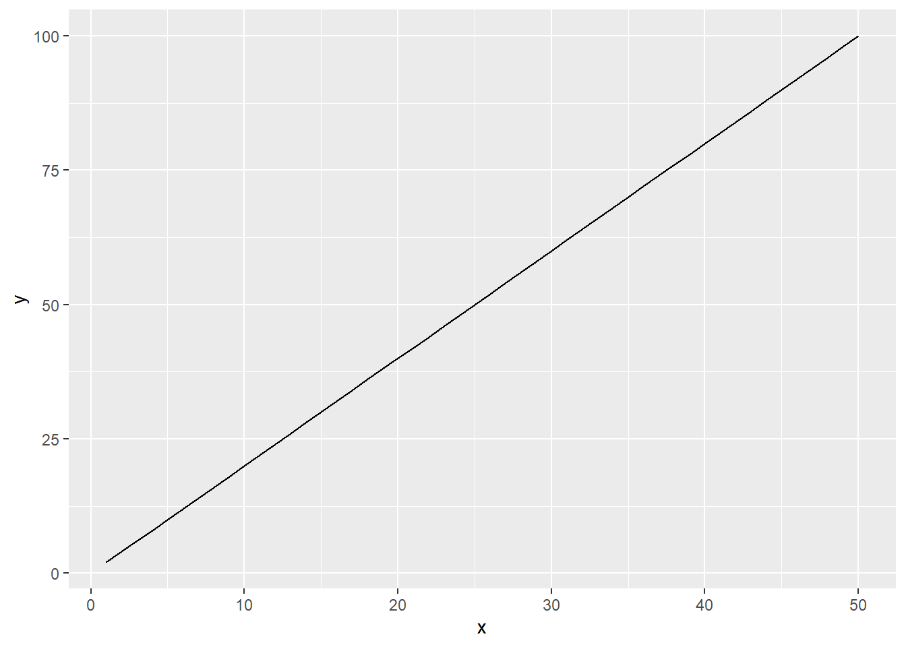
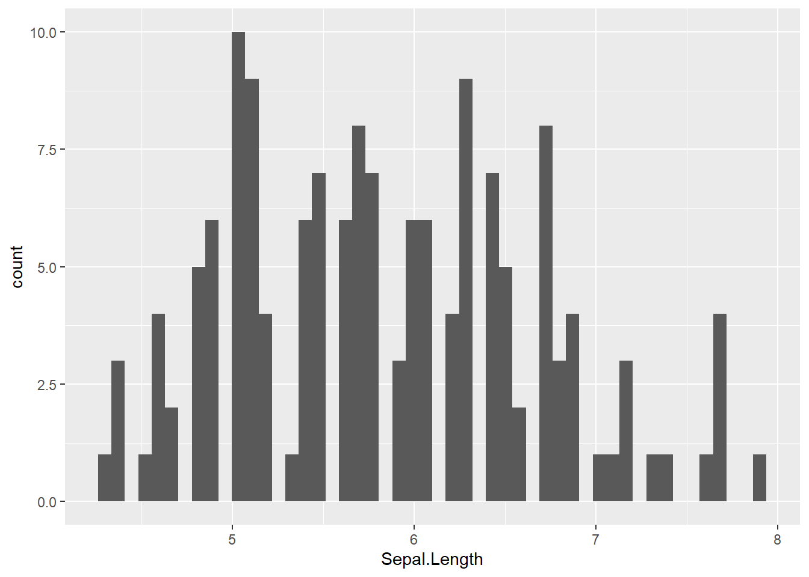
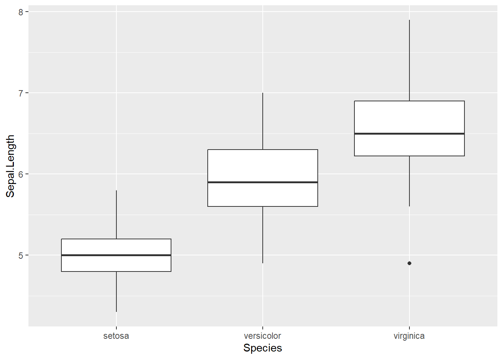

6 Visualization
ggplot2:: offers a range of convenient functions for data visualization. The foundational function, ggplot(), provides the initial framework for adding supplementary layers using the + operator. In ggplot(), we define variables plotted on x- and y-axis through aes(). For example:
# without pipe
ggplot(data = iris,
mapping = aes(x = Sepal.Length,
y = Sepal.Width))
# with pipe
iris %>%
ggplot(mapping = aes(x = Sepal.Length,
y = Sepal.Width))The above code does not display data points; rather, it creates a base frame for plotting. You may add additional point/line layers to visualize your data, as shown below. Please note that aes() refers to columns in the data frame. Variables names that do not exist in the data frame cannot be used.
For more information, see:
6.0.1 Point
geom_point() : Add a point layer
# basic plot
iris %>%
ggplot(aes(x = Sepal.Length,
y = Sepal.Width)) +
geom_point()
# change color by "Species" column
iris %>%
ggplot(aes(x = Sepal.Length,
y = Sepal.Width,
color = Species)) +
geom_point()6.0.2 Line
geom_line() : Add a line layer
# sample data
df0 <- tibble(x = rep(1:50, 3),
y = x * 2)
# basic plot
df0 %>%
ggplot(aes(x = x,
y = y)) +
geom_line()
6.0.3 Histogram
geom_histogram() : add a histogram layer
# basic plot; bins = 30 by default
iris %>%
ggplot(aes(x = Sepal.Length)) +
geom_histogram()
# change bin width
iris %>%
ggplot(aes(x = Sepal.Length)) +
geom_histogram(binwidth = 0.5)
# change bin number
iris %>%
ggplot(aes(x = Sepal.Length)) +
geom_histogram(bins = 50)
6.0.4 Boxplot
geom_boxplot() : add a boxplot layer
# basic plot
iris %>%
ggplot(aes(x = Species,
y = Sepal.Length)) +
geom_boxplot()
# change fill by "Species"
iris %>%
ggplot(aes(x = Species,
y = Sepal.Length,
fill = Species)) +
geom_boxplot()
# change fill by "Species", but consistent color
iris %>%
ggplot(aes(x = Species,
y = Sepal.Length,
fill = Species)) +
geom_boxplot(color = "darkgrey")